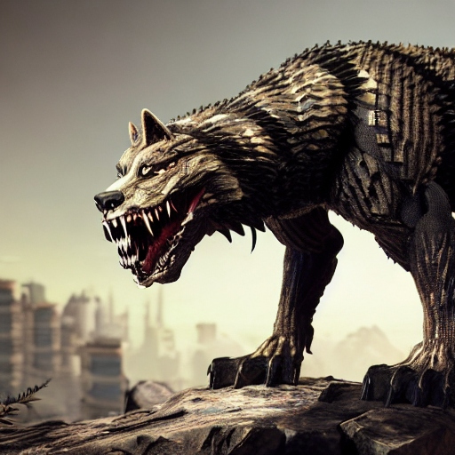

Fauna

Description: The Terra Stalker is a formidable predator resembling a blend of wolf and reptile, with a muscular build and scales that provide natural armor. It has razor-sharp teeth and powerful jaws. Terra Stalkers are pack hunters, coordinating with their packmates to bring down larger prey. They are highly intelligent and communicate through a series of growls, barks, and body language. They roam the savannahs and foothills of Terra Nova in search of prey, often establishing dens in rocky outcrops or burrows dug into the earth. They are carnivorous, preying on herbivorous mammals such as grazing herds and smaller predators like the Nova Prowler. While adult Terra Stalkers are apex predators, their young may fall prey to larger predators or rival packs. They can live for up to 25 standard Terran years.
Planet: Aquaria